When the NBA, with the help of Starwave, launched its massive commercial site last fall, the general reaction was pure adulation. The arbiters of cool on the Web tripped over each other to praise the league's official collection of news and stats in NBA.com. In the spirit of full disclosure, I should note even IU included the site in its vaunted Top 10.
But basketball fanatic Christopher Cote greeted the arrival of an official NBA site with a much different reaction: "It blows, it sucks... it was such a letdown. I was so bummed, it was so weak."
You'll have to excuse him for being somewhat biased. Cote is the co-creator of the site On Hoops at http://www.onhoops.com/, best described as the evil twin of NBA.com.
Where the NBA site highlights superstars in a straightforward, if somewhat sterile style, On Hoops offers "Police Blotter," chronicling the missteps of NBA rank-and-file, replete with icons of bongs, moonshine jugs and boxing gloves.
 It's not that Cote and his partner Brock Andersen don't like the NBA. You need only wander their site to find out what big fans they are of the sport. On Hoops features in-depth game analysis, detailed examinations of trades and signings and explorations of team trends. Cote and Andersen, both 23, leave the mundane daily reporting to the professionals.
"At NBA.com, there's not much there," says Andersen, "I'd rather read the box scores in the paper and I've already seen all the great plays on ESPN by the time they are on the Web."
Only two basketball fanatics such as Cote and Andersen could engineer a site that examines all facets of the game, sometimes taking the time to talk about forgotten arts of passing and shooting in these days when the dunk reigns supreme. They are quick to praise those who are worthy, but it's open season on the NBA's crybabies, malcontents and prima donnas.
"The popularity of our site?" Cote ponders, "There's no crap to it. If a guy plays like a dog we call him a dog. I'm a fan of the game more than individual teams. Hitting the open man, running a good break. That's what I love seeing."
The pair refer to themselves on the site as Los Chucks, derived from a slang term for their style of play. Los Chucks work by day at Vidya Media Ventures, a contract Web publisher they founded along with four other college friends. The pair started On Hoops when it became clear their co-workers were sick of hearing the two always talking about basketball. The two were screwing around with the computer one night and On Hoops was born.
At first, Cote says, they were lucky to get 100 hits a month, but you can't hide good content on the Web. Cote says now On Hoops averages 120,000 hits a week, a remarkable number for a non-commercial site. Success has its benefits; at press time, Los Chucks were in the midst of negotiating with a couple of commercial online services to become content providers. They've also put out the word via their site that they are open to sponsorship.
The ideas for their site just come to them impulsively. Police Blotter was started when Cote was in bed reading about the Cleveland Cavaliers' Tyrone Hill and the Sacramento Kings' Brian Grant altercation with some Cincinnatians.
With Andersen still finishing up school at the University of California at San Diego while working and Cote pulling in 13-hour days, neither has much of a chance to do recreational Web browsing. Cote says maintaining the site takes about an hour a day, and he refuses to work on the weekends -- unless there's a really big story.
In addition to sharing the writing and editing, Cote puts together all the graphics for the site, as well design for other Vidya clients. Andersen's 'net knowledge was limited before On Hoops started. "For me it just kind of started as a hobby," he says, "it was a way to learn the programming language."
Both Andersen and Cote say e-mail from readers pleases them most, especially those who have started to contribute articles to the site. Beyond offering stories, visitors help On Hoops expand by nominating players to two of the more popular areas: The Journeyman/Chump Roster highlighting the "Masters of the 10-day contract, league minimum plus meal money" and The Golden Chuck Awards where the awards range from the "The Bolted to the Floor Chuck" to "The Acie Earl Ugliest Skills Chuck."
Don't look for Los Chucks to diversify any time soon. "We don't like football very much," Cote says, "and baseball puts me to sleep by the second inning."